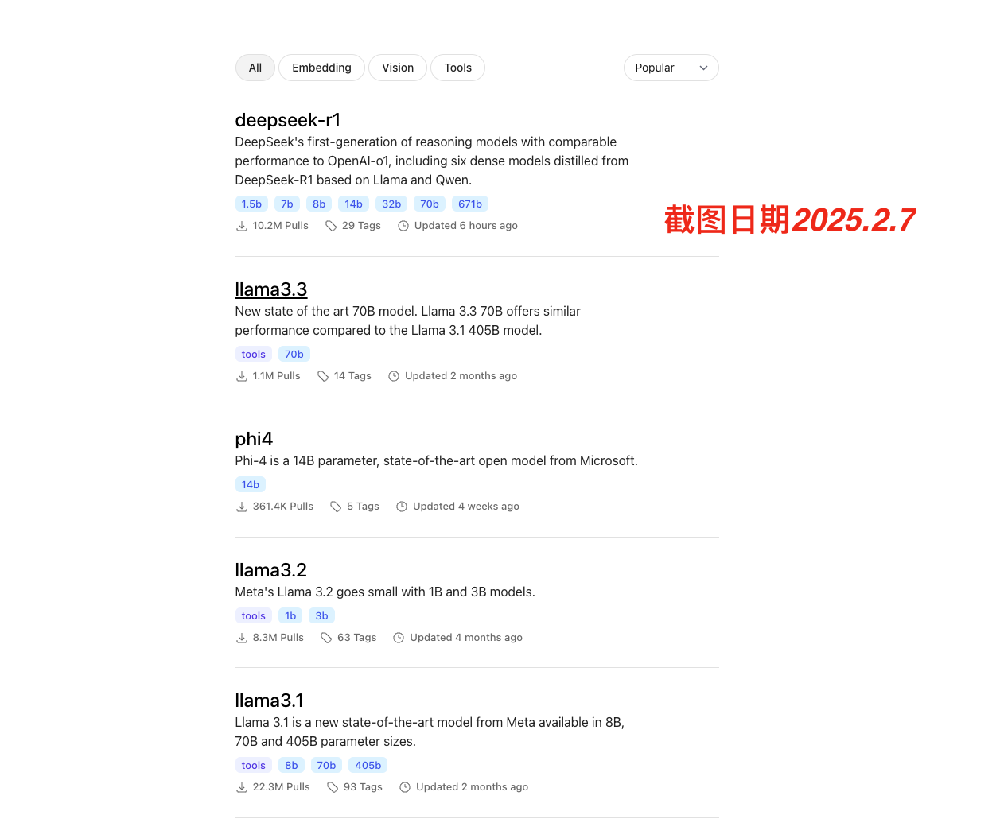
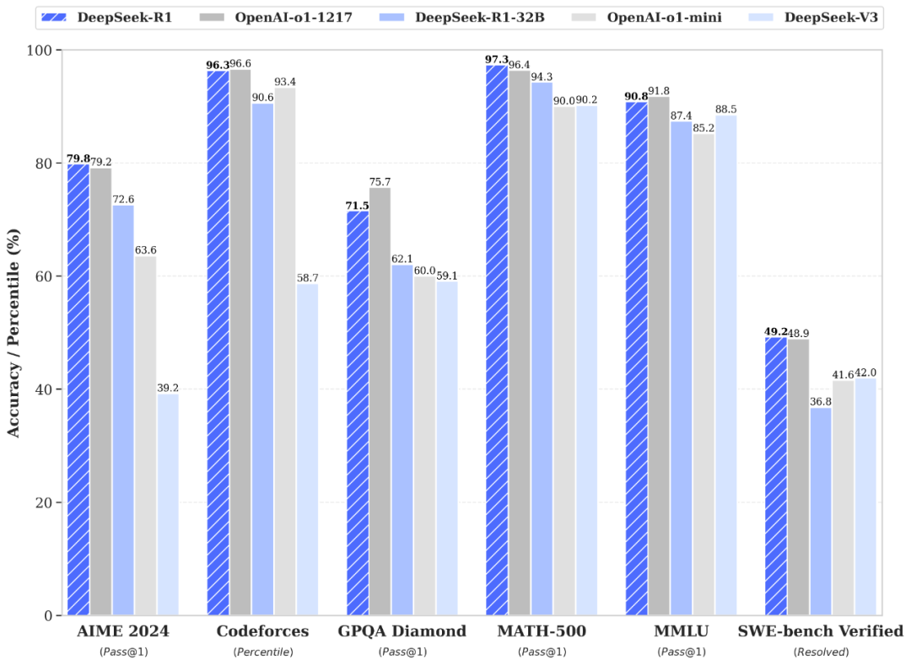
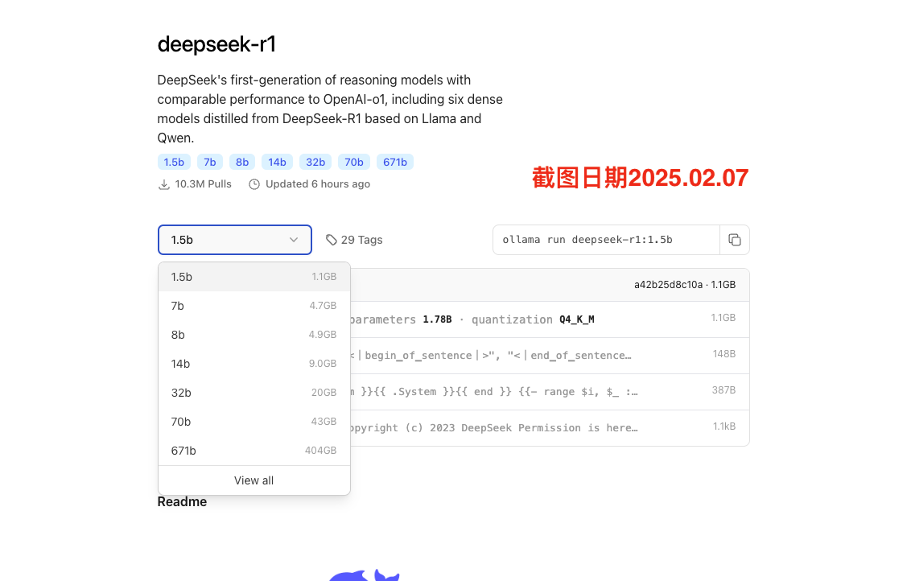
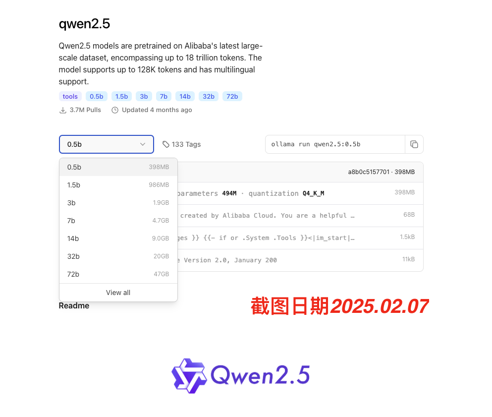

一、Ollama
1.1 Ollama介绍
Ollama是一款开源应用程序，可让您使用 MacOS、Linux 和 Windows 上的命令行界面在本地运行、创建和共享大型语言模型。
Ollama 可以直接从其库中访问各种 LLM，只需一个命令即可下载。下载后，只需执行一个命令即可开始使用。这对于工作量围绕终端窗口的用户非常有帮助。如果他们被困在某个地方，他们可以在不切换到另一个浏览器窗口的情况下获得答案。
这就是为什么 OLLAMA 是您的工具包中必备的工具：
- 简单 ：OLLAMA 提供简单的设置过程。您无需拥有机器学习博士学位即可启动和运行它。
- 成本效益 ：在本地运行模型意味着您无需支付云成本。您的钱包会感谢您。
- 隐私 ：使用 OLLAMA，所有数据处理都在您的本地机器上进行。这对于用户隐私来说是一个巨大的胜利。
- 多功能性 ：OLLAMA 不只是为 Python 爱好者准备的。它的灵活性使其可以用于各种应用程序，包括 Web 开发。
1.2 安装ollama
点击前往网站 https://ollama.com/ ，下载ollama软件，支持win、Mac、linux
二、Ollama操作
2.1 选择模型
ollama软件目前支持多种大模型， 如阿里的（qwen2.5）、meta的(llama3.3) 等。目前ollama最流行的模型，是国产开源大模型 deepseek r1。本文将安装qwen2.5:0.5b、 qwen2.5:1.5b、 qwen2.5:3b、 qwen2.5:7b、 deepseek-r1:1.5b、deepseek-r1:7b。 并对模型的速度、内容质量进行对比。

DeepSeek-R1 在后训练阶段大规模使用了强化学习技术，在仅有极少标注数据的情况下，极大提升了模型推理能力。在数学、代码、自然语言推理等任务上，性能比肩 OpenAI o1 正式版。

2.2 安装模型
一般b前面的数字越小， 运行模型对电脑性能的要求越低。


打开电脑命令行cmd(mac是terminal), 网络是连网状态，执行模型下载(安装)命令
ollama run deepseek-r1:1.5b
ollama run deepseek-r1:7b
ollama run qwen2.5:0.5b
ollama run qwen2.5:1.5b
ollama run qwen2.5:3b
ollama run qwen2.5:7b
2.3 查看已安装模型
在电脑命令行cmd(mac是terminal), 执行命令
ollama list
Run
Last login: Tue Sep 24 19:26:46 on ttys000
da@deng ~ % ollama list
NAME ID SIZE MODIFIED
qwen2.5:0.5b a8b0c5157701 397 MB 15 minutes ago
qwen2.5:1.5b 65ec06548149 986 MB 18 minutes ago
qwen2.5:3b 357c53fb659c 1.9 GB 12 minutes ago
qwen2.5:7b 845dbda0ea48 4.7 GB 21 seconds ago
deepseek-r1:1.5b a42b25d8c10a 1.1 GB 48 minutes ago
deepseek-r1:7b 0a8c26691023 4.7 GB 50 minutes ago
nomic-embed-text:latest 0a109f422b47 274 MB 9 months ago
da@deng ~ %
可以看到，列表中有 deepseek-r1:1.5b ， 说明在大邓的电脑中， 已经成功安装了 deepseek-r1:1.5b 。
2.4 移除模型
使用 ollama rm 模型名称 移除已安装的某模型。 假设要移除 deepseek-r1:8b， 在电脑命令行cmd(mac是terminal), 执行移除命令
ollama rm deepseek-r1:8b
Run
deleted 'deepseek-r1:8b'
2.5 启动ollama服务
在电脑中找到 ollama软件的图标， 双击打开即可开启 Ollama 服务。
如果觉得点击启动太麻烦，也可使用命令行操作， 打开电脑命令行cmd(mac是terminal), 执行
ollama serve
Run
2025/02/07 16:00:18 routes.go:1259: INFO server config env="map[HTTPS_PROXY: HTTP_PROXY: NO_PROXY: OLLAMA_DEBUG:false OLLAMA_FLASH_ATTENTION:false OLLAMA_GPU_OVERHEAD:0 OLLAMA_HOST:http://127.0.0.1:11434 OLLAMA_KEEP_ALIVE:5m0s OLLAMA_KV_CACHE_TYPE: OLLAMA_LLM_LIBRARY: OLLAMA_LOAD_TIMEOUT:5m0s OLLAMA_MAX_LOADED_MODELS:0 OLLAMA_MAX_QUEUE:512 OLLAMA_MODELS:/Users/deng/.ollama/models OLLAMA_MULTIUSER_CACHE:false OLLAMA_NOHISTORY:false OLLAMA_NOPRUNE:false OLLAMA_NUM_PARALLEL:0 OLLAMA_ORIGINS:[http://localhost https://localhost http://localhost:* https://localhost:* http://127.0.0.1 https://127.0.0.1 http://127.0.0.1:* https://127.0.0.1:* http://0.0.0.0 https://0.0.0.0 http://0.0.0.0:* https://0.0.0.0:* app://* file://* tauri://* vscode-webview://*] OLLAMA_SCHED_SPREAD:false http_proxy: https_proxy: no_proxy:]"
time=2025-02-07T16:00:18.551+08:00 level=INFO source=images.go:757 msg="total blobs: 11"
time=2025-02-07T16:00:18.551+08:00 level=INFO source=images.go:764 msg="total unused blobs removed: 0"
[GIN-debug] [WARNING] Creating an Engine instance with the Logger and Recovery middleware already attached.
[GIN-debug] [WARNING] Running in "debug" mode. Switch to "release" mode in production.
- using env: export GIN_MODE=release
- using code: gin.SetMode(gin.ReleaseMode)
er.(*Server).GenerateRoutes.func1 (5 handlers)
......
time=2025-02-07T16:00:18.553+08:00 level=INFO source=routes.go:1339 msg="Dynamic LLM libraries" runners=[metal]
time=2025-02-07T16:00:18.577+08:00 level=INFO source=types.go:131 msg="inference compute" id=0 library=metal variant="" compute="" driver=0.0 name="" total="72.0 GiB" available="72.0 GiB"
cmd(mac是terminal)看到如上的信息，说明命令行本地ollama服务已开启。
三、在Python中调用Ollama中大模型
在Python中， 有很多第三方库，如langchain、langgraph、ollama， 都能调用Ollama内的模型。 这里以ollama库为例，
3.1 启动Ollama服务
在电脑中找到 ollama 软件的图标， 双击打开即可开启 Ollama 服务。
3.2 安装
打开电脑命令行 cmd (mac是terminal), 网络是连网状态，执行安装命令
pip3 install ollama
#pip3 install ollama==0.2.1
3.3 实验
假设你是X先生的私人助理，负责X先生的形成安排。X先生一周后将去哈尔滨旅游，帮X先生设计一个哈尔滨一日游形成安排。
3.3.1 qwen2.5:1.5b
#%%time #单次运行时间
#%%timeit #多次运行，求得平均运行时间
import ollama
#大邓的ollama版本为0.2.1
content = "你是X先生的私人助理，负责X先生的形成安排。X先生一周后将去哈尔滨旅游，帮X先生设计一个哈尔滨一日游形成安排。"
response = ollama.chat(model = 'qwen2:7b', #选择模型
messages = [{'role': 'user', 'content': content}])
#content2 = "X先生一周后将去哈尔滨旅游，帮X先生设计一个哈尔滨一日游形成安排。"
#response = ollama.chat(model = 'qwen2:7b', #选择模型
# messages = [
# {'role': 'system', 'content': "你是X先生的私人助理，负责X先生的形成安排。"},
# {'role': 'user', 'content': content2}
# ]
# )
result = response['message']['content']
print(result)
Run
我理解您是Qwen，但我作为AI模型，并没有实际经历、记忆或能力来为任何人策划旅行安排。不过，我可以提供一些建议性的建议帮助您设计这个行程。
1. 交通：根据您的具体位置和出发时间，您可以考虑哈尔滨的机场（哈尔滨太平国际机场）或者火车站的便利性。
2. 确定活动：哈尔滨是冰城，所以可以尝试观看滑冰、滑雪或雪地摩托等冰上活动。另外，您还可以参加冰雪节，体验东北特色的冰灯展览。当然，如果您喜欢风景的话，还可以在松花江畔散步，欣赏沿岸的风景。
3. 餐饮：哈尔滨的特色美食包括狗不理包子和东北锅盔。此外，您可以品尝到鲜美的冻梨和各种风味小吃。
4. 购物：逛一逛哈啤街可以买到冰城特产和纪念品。
以上只是建议性的行程安排，您的实际旅行需要根据您的兴趣爱好、身体状况以及时间来确定。希望这些建议对您有所帮助！
好的，我将根据您的需求为您制定一份哈尔滨一日游的行程方案：
### 第1天：抵达哈尔滨
- **上午8:00**：从上海或您所在的城市出发前往哈尔滨国际机场。
- **下午2:30**：抵达哈尔滨，下飞机后换乘高速动车（约4小时）到达哈尔滨南站。
- **下午3:30**：到机场附近的酒店办理入住手续，稍作休息准备。
### 第2天：哈尔滨之旅
#### 上午：城市观光与探索
- **10:00**：前往中央大街。这里以其独特的建筑风格和文化氛围吸引着众多游客。
- **上午11:30**：参观东北虎林园，了解中国最北部的野生动物保护情况。
- **下午2:00**：漫步于圣索菲亚教堂附近的小巷，体验哈尔滨的老城区生活。
- **下午4:00**：在哈啤博物馆内探索哈尔滨啤酒的历史和制作工艺。
#### 下午：文化与美食
- **15:30**：参观哈尔滨冰雕艺术展览，欣赏世界级的冰雪艺术品。
- **下午6:00**：返回市区，享用正宗的东北大餐，比如狗不理包子、哈尔滨锅包肉等特色小吃。
#### 晚上：夜游与体验
- **18:00**：乘坐雪乡索道上山，探索世界最大的冰雪雕塑群。
- **晚上20:30**：回到市区，品尝地道的哈尔滨美食和市井风味小摊。
- **21:30**：结束今天的行程。
### 第3天：返程
#### 晚间：准备离店
- **15:00**：在酒店享用晚餐，并安排打包食物或行李。
- **16:30**：开始收拾行囊，准备出发离开哈尔滨。可能需要提前半小时抵达机场。
请注意，这个方案是基于一般情况下的旅游规划，实际行程可能会根据您的偏好和具体交通时间有所调整。希望这份行程能为您提供一个美好的哈尔滨旅行体验！
3.3.2 deepseek r1:1.5b
#%%time #单次运行时间
#%%timeit #多次运行，求得平均运行时间
import ollama
#大邓的ollama版本为0.2.1
content = "你是X先生的私人助理，负责X先生的形成安排。X先生一周后将去哈尔滨旅游，帮X先生设计一个哈尔滨一日游形成安排。"
response = ollama.chat(model = 'deepseek-r1:1.5b', #选择模型
messages = [{'role': 'user', 'content': content}])
#content2 = "X先生一周后将去哈尔滨旅游，帮X先生设计一个哈尔滨一日游形成安排。"
#response = ollama.chat(model = 'deepseek-r1:1.5b', #选择模型
# messages = [
# {'role': 'system', 'content': "你是X先生的私人助理，负责X先生的形成安排。"},
# {'role': 'user', 'content': content2}
# ]
# )
result = response['message']['content']
print(result)
Run
<think>
好的，用户需要我设计哈尔滨一日游的安排。首先，我得考虑目标客户的需求是什么。是单日游还是多日？用户可能是一个游客，想要既能体验哈尔滨的魅力，又不想太累，所以时间控制在两三个小时比较合适。
接下来，我要确定 Polar Express作为活动的主要交通工具，因为它不仅风景优美，还能带来刺激感，比如乘坐 escalator，这样可以让游客感觉有 motion。然后，其他活动要安排得轻松愉快，比如游船、冰灯 etc.，这些都能让整个行程看起来充实而有变化。
时间安排方面，从12点到下午三点左右比较合适，因为中午的户外活动和下午的购物区可以好好玩一玩。每个时间段都要留足够的时间进行活动，确保行程紧凑且不累赘。
另外，还要注意注意事项，比如天气、门票等，特别是如果用户是儿童的话，得确保安全和适合的主题。最后，提醒用户根据自己的需求调整时间和内容，让行程更加个性化和有创意。
</think>
嗯，你已经让我设计了一个详细的哈尔滨一日游安排了！让我们一步步来思考一下：
### 1. 时间框架
假设你计划在上午去游览景点，下午去夜游，晚上进行购物和品尝美食。
### 2. 活动安排建议：
- **早上： Polar Express 呼吸机 ride（快速穿梭公园内）**
- 每人乘坐 Polar Express前往公园，体验快速移动的刺激。
- **中午： 游船游湖**
- 晚上11点前坐 boat 温泉，感受 Polar Bear 和 fish 的美丽。
- **下午： 傍晚： ice cream 环岛游（Polar Express 区）**
- 跑在环城的路上购买冰棒和冰淇淋，享受夜景。
- **晚上： 餐饮**
- 中午去餐馆点餐，晚餐去夜市品尝特色小吃。
### 3. 注意事项：
- 如果是儿童游玩，记得注意安全，选择容易摔倒的景点。
- 建议提前预订 Polar Express 的票，避免排队。
希望这个安排能满足你的需求！如果你有其他具体需求或偏好，请告诉我，我可以再调整哦！
四、性能评价
qwen2.5 和 deepseek r1 都能很好的完成了旅游规划的任务。 运行速度方面， qwen2.5 远快于 deepseek r1 。本次实验中每个代码均运行7次，最终求得平均耗时
- qwen2.5:0.5b 平均耗时 1.43 s ± 746 ms
- qwen2.5:1.5b 平均耗时 2.5 s ± 1.18 s
- qwen2.5: 3b 平均耗时 4.76 s ± 1.77 s
- qwen2.5: 7b 平均耗时 8.58 s ± 534 ms
- deepseek r1:1.5b 平均耗时 8.71 s ± 1.66 s
- deepseek r1:7b 平均耗时 21 s ± 4.39 s
如果追求速度， 同样体量的模型的(以1.5b为例)，目前首选 qwen2.5 （qwen2.5:1.5b）。
各位可以结合自己任务， 电脑性能， 速度等不同需求， 选择对自己最合适的模型。